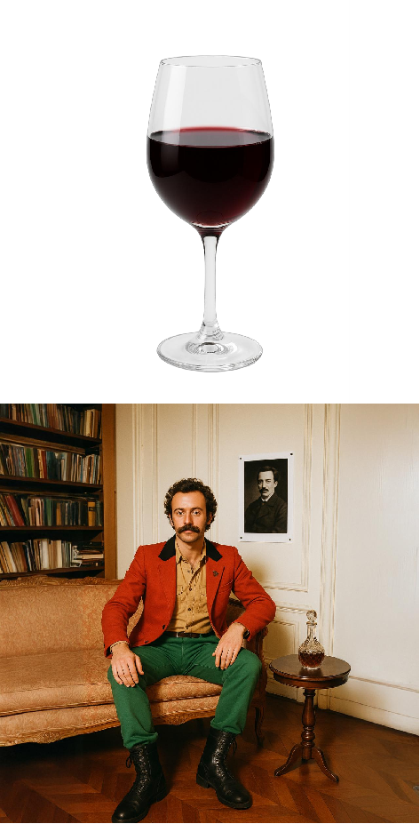
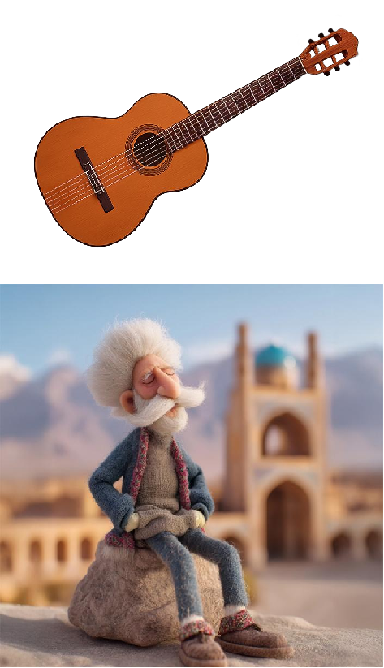
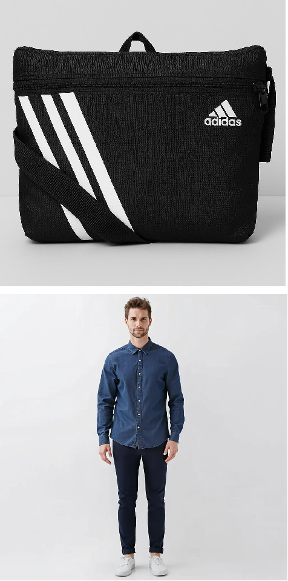

We propose a new approach for interaction-aware human-object composition, named HOComp, which focuses on seamlessly integrating a foreground object onto a human-centric background image while ensuring harmonious interactions and preserving the visual consistency of both the foreground object and the background person.




